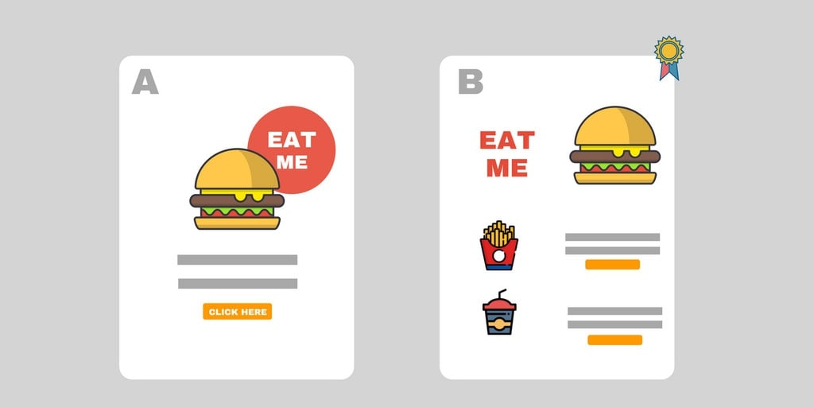
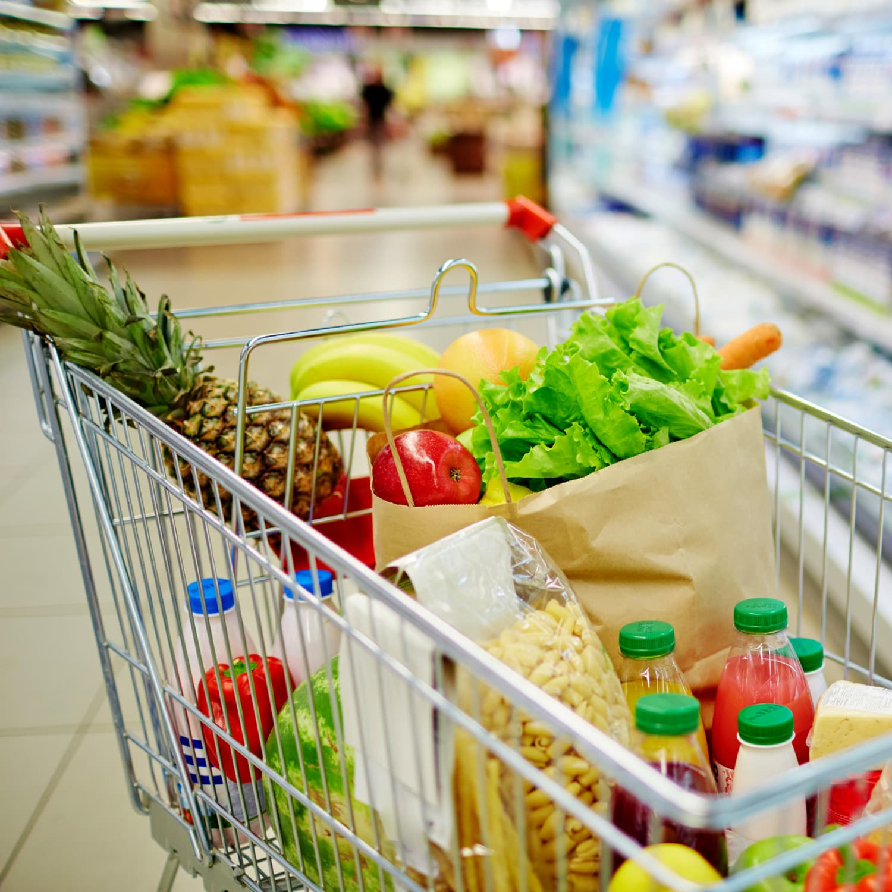

In this project, Fecom Inc's sales data between 2022 and 2024 were analyzed using SQL and Power BI to obtain insights into critical areas such as revenue trends, product and customer segments, payment and delivery performance.

In this project we performed A/B Test to determine which marketing campaign is best for fast food company using Python

This project involves analyzing grocery sales data using SQL and Power BI to gain insights into business performance, customer behavior, and sales trends.
This project analyzes real estate data, focusing on housing prices, area distribution, and various property attributes after web scraping the dataset from RE/MAX Türkiye using BeautifulSoup and Requests in Python..

This project contains an analysis of a retail dataset, focusing on various aspects of sales performance, customer behavior, and product insights using Python
This project analyzes COVID-19 cases, deaths, and vaccination data using SQL. Also creating a dashboard using Power BI.